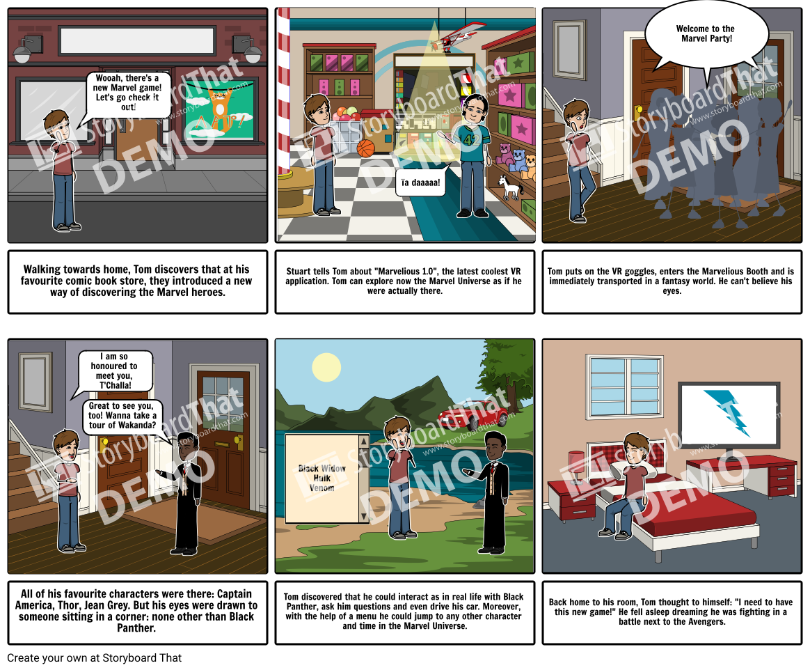

MARVELOUS
1 What is the app in short? - Abstract
The Marvelous App aims to present a complex visualisation of the Marvel Comic Universe. Both people who don't know the comics and die-hard fans will get the chance to interact, search and find out information about the characters and the events tying them up. The app is a fun and interesting way to discover the Marvel characters, through means of Virtual Reality, Timelines and Interactive Design.
2 Why do we do it? - Motivation
The Marvel Universe is inherently complex. With a multitude of characters and actions spanning several years and continents, it is difficult to know where to start or who interacts with whom. The movies don't cover all of the information and reading all the comics takes time. For poeple who have never interacted with the universe, the task to get to know it seems daunting, and die-hard fans would like an outlet to share all their knowledge.
Our solution aims to bridge this gap, by offering an interactive and easy way to discover the universe. We propose several solutions, of different complexities, aimed at different types of users, to help them understand the relationships between the characters. It is also a pleasant way of following your passion and could help build the hype before a new movie release.
3 What do we want to do? - Requirements Analysis
Application description
The application will present data about Marvel heroes, comics, events and more in a user friendly way. The data presented will be very detailed to suit all kinds of users, but displayed in a visual friendly way. By doing this we assure that the user has a nice experience and the data presented offers him a real value.
Use cases
- Used by comics / movies fans to get more knowledge about their favorite heroes
- Used as an information point for business persons (e.g writers)
- Used by someone who is new to the Marvel Universe and wants to start getting to know it (e.g. young teens or parents)
Features
- Ease of use through intuitive and attractive design of the application.
- Robustness and functionality.
- Performance and scalability.
- Modern and innovative approach of the problem.
3.1 How should it look like? - Visualisation Examples - sketches, wireframes, storyboards and, optionally, prototypes
In order to find the best idea for presenting the Marvel Universe in a complex, yet intuitive manner, we started by working on 3 design prototypes. The are as follows:
- Vertical Timeline
- Augmented Reality Real Life Situation
- Hero Carousel
3.1.1 Vertical Timeline
The vertical scroll presents the data offered by the Marvel API chronologically. This way, all the different elements of the Marvel Universe - heroes, comics, authors, main events - are structured using a common point: their placement in time.
In this concept, besides the main screen which represents the elements on a timeline, the user can gain access to more details about an element (a hero, for example), on the element's page. Pictures, data, comics, years, important events and connections with other stories are displayed here. This is the way the connections between all this different entities are respresented and displayed to the user. To discover more about the complex Marvel Universe, they have to start from a point of interest - their favourite hero maybe - and then it's connections with other Marvel elements are a one or two clicks away.
The advantage of this design is the fact that it's easy to understand by both a beginner and a connoisseur of the Marvel Universe. The first one will have all the data structured in a logical way and for the second one, the more intricate information will be discoverable in an intuitive manner.
3.1.2 Augmented Reality Real Life Situation
The idea behind this concept is that the easiest way for people to get to know one another and to exchange information is through direct speech and interaction. Therefore, using Augmented Reality, our users will be able to imerse themselves into the Marvel Universe, talk to their different heroes and take part, beside them, in legendary battles.
The hero enters a space with all of its heroes. He can navigate through them, he can select if he wants to interact with one or more at a time and he can choose a moment in time and a place. He can also choose to "Jump in!" directly in the action, where he has the superhero's perspective on things. He can jump across skyscrapers along with Spider-Man, fly along Iron Man or shrink together with Ant Man. He can control all of his actions through direct speech and his movements and actions through the movement of his body. If he has questions about the characters, he can ask them directly.

As shown in the picture above, in the Augmented Reality world, the user can see and talk to a user, can choose the time, place and characters he is curious about and he can also opt for a narration of that hero's story, if he doesn't want to read it.
3.1.3 Hero Carousel
This design idea aims to provide a simple and intuitive way of representing the Marvel main characters. The application is based on more main pages, one for each type of entity provided by the Marvel API. The carousel is not only present for the heroes, but also for the authors or the comics.
The relations between entities of different types are represented in each entity's own page. For example, when accessing a hero's page, we see not only details about them, but also, what comics and stories he belongs to or the main events that he has been part of.
The design aims to satisfy both the newbie users and the die-hard ones. For the first category it offers a simple structure, easy to navigate, for all the information provided by the API. For the latter, there is a complex search and filtering function provided so that they do not have to go through all the basic knowledge each time and instead go straight to the specific data that interests them.
3.2 Who will use it? - Persona Templates
- Die-hard fan
- Kid fan
- Newbie to the MCU
- Parent of interested child
- to be impressed from the beginning, to see something new and "worth their money"
- to be able to search fast for characters
- to find an appropriate content for their teenage children
We target this category of users as they are the ones who would show the most interest for this kind of app. The main goals for this user would be to be able to search specific information and be able to easily skip the basic details about heroes, stories and other Marvel entities.
Keeping in mind the needs of this type of user, the application should provide a complex search function that can filter entities chronologically and by category. The information should be presented in an interesting way that displays a few of the Marvel comics style, in order to please the esthetic expectancies of a MCU connoisseur.
For this type of user, the application should be intuitive and not overcrowded with specific or detailed information. A basic structure of the Marvel Universe should be easy to understand at a first glance and detailed information should be displayed on request (e.g. pressing a "More" button).
By using the app the newbie's interest for Marvel could grow and, in time, they could become part of our first category of users, the die-hard fans.
We imagined that a person interested in the app would also be the parent who wants to give it as a present to their son/daughter. Before buying it, they would be curious to at least know what it is, so they might try to experiment with it. The idea is to design a product as user-friendly as possible, in order not to "scare them away."
The typical parent would be over 30, would have a minimum to average computer savviness and would have a minimum to average forehand knowledge of the Marvel Universe. They probably won't have that much time either, so what is important for them is:
3.3 How do we know the user? - QOC Method
The QOC (Question, Options and Criteria) method structures the creative process in a way that is not only practical, but also helps us to think and observe the application from a user's point of view. The questions we chose are targeting our most important categories of users and their prefered app functions. For each question, the criterias reflect the pain points or interests of certain user categories.
By evaluating the designs in this way we have a way of measuring the way each idea suits the users. This allows us to further refine each idea and even combine them, if possible, to pick the best one for each use case.
Following the QOC method, from the three options for the project, the Vertical Timeline is the most intuitive one, with a logical ay of displaying all the elements and the connections between them. Due to its combination of ease of implementation and user friendly visualisation of data, The Vertical Timeline is the chosen solution to implement.
4 What solution do we provide? - Vertical Timeline
Chosen for it's intuitive display of data and relations of it, the Vertical Timeline solution, as described in the 3.1.1 section, is based on displaying the data gathered from the Marvel API in a chronological order. Furthermore, each element has it's own details page, where data about it or about the connections it has with other Marvel elements is shown.
The solution we chose makes use of the parallax scrolling effect to give a subtle 3D effect and make the user's experience more immersive. This effect, combined with the comic like pictures make the application a balanced combination beween the comics style world and the modern technologies.
4.1 How do we present the data? - Solution components
The two main pages of the aplication are the home page, where the vertical timeline is displayed, and the element page, with data about the selected element and its connections to the rest of the Marvel Universe.
4.1.1 The main page - Travel in time
The main structure of this page is displaying a vertical timeline of the elements in the Marvel Universe in chronological order. For a good overview, the elements shown here can be from all the categories provided by the API - comics, comic series, comic stories, events and crossovers, creators, characters.
The main page offers a simple but comprehesive look at all the data provided, which is appealing for a new Marvel fan. The provided search function helps a more experienced user to quickly get to the information that interests them.
Each element has a year associated and some simple data about it in order for a user to be able to identify it. Pictures are also shown, to make the best out of the Marvel comics. A few decorative elements are also rpesent here, such as a spider climbing up a web when scrolling down. This elements can be subtle indicators of the connection between items. In this case, the spider could suggest the link between Spider-Man and Venom. This would be a pleasing experience for the more experienced users to discover while scrolling through the application.
The main page though is just a starting point for discovering more information. By clicking on a desired element, we can access its page, where we find more specific details.
4.1.2 The details page - Get to know your heroes
The scope of this page is to display as much of the data an element has associated with it in the Marvel API in a structured and logical way. Some simple information, such as the name, year and main related comics will be displayed, along with a brief description of the item and a picture.
The rest of the data for each detail page will depend on the category of the item (e.g. comics, creators, characters). For example, for the creators, the user will be able to find the author's contribution to the Marvel Universe along with some details about their lives. For the characters, the basic storyline and appearances in stories will be displayed.
Each details page will also have a section where the relation of the item with other Marvel items will be shown. The creators will have connections with other creators, heroes, events, and the characters will have connections between them and with their creators, with events and so on.
In a structured way, in this part of the page the user will find the item's place in the Marvel network, as all the other elements in each category that has somehow interacted with the current element will be displayed.
4.2 What did we use to implement it? - Technologies
The project is created using HTML5 (for structure), Angular 6 (to make it smart) and CSS3 (to make it pretty). We also used RxJS (Reactive Extensions for JavaScript), a library for reactive programming using observables that makes it easier to compose asynchronous or callback-based code. Angular Tymeline and Moment JS helped creating the main timeline page. Angular Timeline is an Angular.js directive that generates a responsive, data-driven vertical timeline to tell a story, show history or describe a sequence of events. Moment JS solves the date and time management problem and is useful when structuring the data chronologically.
4.3 How is it structured? - Project structure
The ... component makes the call to the Marvel API in order to retrieve the displayed data.
5 Where can we go from here? - Conclusion
The next steps after the implementation of the chosen solution would be to extend it with various features to make the application more engaging and more useful. In conclusion, this first version is a MVP which will present the marvelious data in a friendly and useful way to both new and experimented users. It is also a pleasant way of following your passion and stay up to date with all the new updates in the Marvel universe.